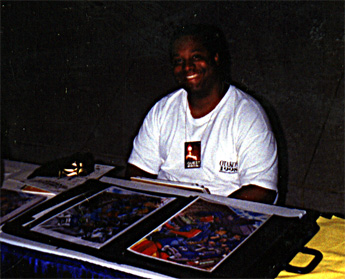
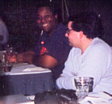
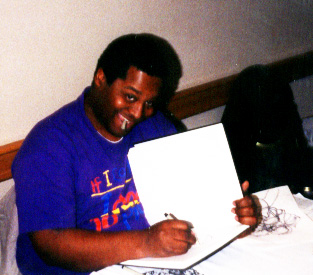
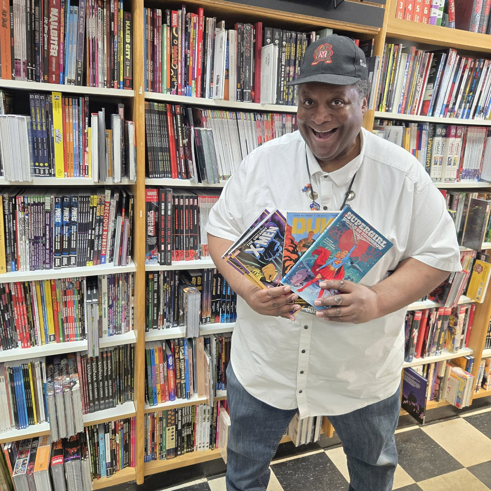
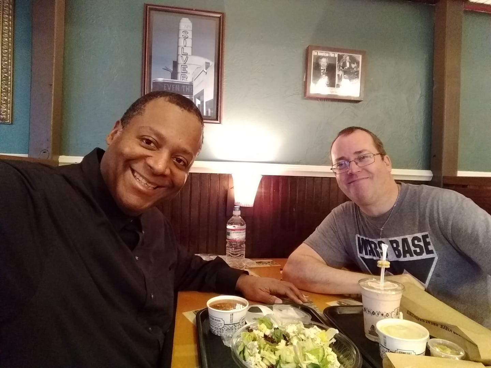
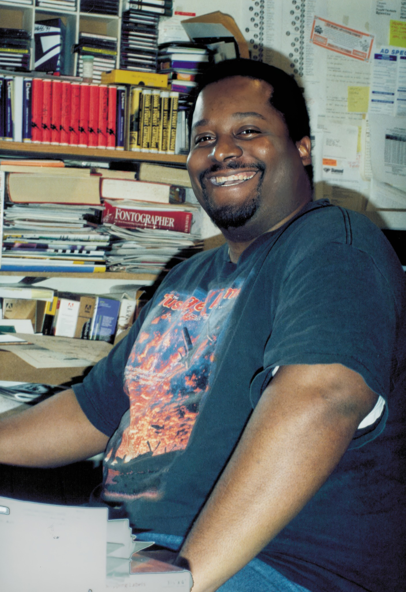

About This Site
John Staton


John Staton was a Maryland artist, cartoonist, and relentless worldbuilder. He attended the University of Maryland, where he drew a comic strip for the college paper, The Diamondback , an early version of Daniel Dukke and Ferdinand Fox, his first original characters, which he would keep developing for years.

He had so, so, so many ideas. Good ones, too. And bad ones. DMV, the Streamers, the FMP, N. E. Boox, a million tiny one-offs and more. All of them have the same sensibility; action-figure absurdism but grounded in this intense, genuine craft.
John could be a perfectionist. Sometimes this was to his detriment. But the results are stunning. Everything was so thought-out; everything so detailed, and all of it had a depth that would give authors like Masamune Shirow or Mike Pondsmith a run for their money. (John would have liked those references and would have been bashful about that comparison.)
In a professional capacity, John was a longtime assistant to Mark Wheatley at Insight Studios, where they spent "endless hours together hitting deadlines and catching naps on the floor." Adam Warren wrote Empowered Special #4: Animal Style specifically for him, having admired his mecha skills from afar. John delivered 24 color pages plus at least 40 design sheets. Warren called it above and beyond the call of comics duty.
He produced some of the finest anime-influenced Western character art around , drawing in an era when there were few Westerners who could pull off that look at all, and nobody who could quite match him.

He worked for years in the Maryland comics retail community, a continuous thread across decades: starting at Closet of Comics, which became Liberty Books & Comics, then Big Planet Comics, then Third Eye Comics. Big Planet called him an institution in Maryland. He is remembered fondly. Third Eye said that the best thing about opening their College Park location was getting to meet and work with him.

John Staton passed away in January 2026. He was a good friend. He is missed.

This Site
The John Staton Museum was built as an act of preservation and tribute. It was inspired in part by Charmer Studio. The site's layout and structure are free for anyone to use on the GitHub repo. The archive covers all 194 pieces John posted publicly on DeviantArt, with the original comment threads preserved, including every reply he left. That's where his voice comes through most clearly.
Every effort was made to represent his work accurately and with respect. If you have a correction, a memory, another piece of his work that belongs here, or just something to say, the contact page is open.